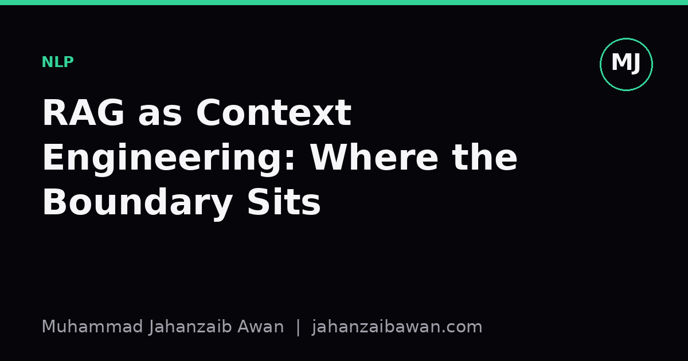

RAG as Context Engineering: Where the Boundary Sits
Retrieval augmented generation is often sold as a modelling technique, but most of the hard work, and most of the failure modes, live in how you assemble and bound the context you hand to the model.

Why this distinction matters
Retrieval augmented generation gets presented as a single pipeline: embed a query, pull back the nearest documents, feed them to a language model, get a grounded answer. That framing is tidy and it is also misleading, because it hides the fact that two quite different jobs are being done under one name. The first job is information retrieval: finding text that is relevant to the question. The second job is context engineering: deciding what to keep, how to order it, how to compress it, and how to phrase the instructions that sit around it so the model actually uses what it is given. In my experience, when a RAG system underperforms, the postmortem usually blames the retriever or the embedding model, but the actual defect is in the second job.
This matters because the two jobs fail in different ways and need different fixes. A retrieval failure means the right passage never made it into the candidate set. A context engineering failure means the right passage was there, but the model ignored it, misweighted it against a more confident but wrong prior, or got confused by formatting that buried the answer in the middle of a long block of text. If you only ever measure end-to-end answer accuracy, you cannot tell which failure you are looking at, and you will end up tuning the wrong component for weeks.
I think the confusion persists because retrieval is the part with the obvious knobs: embedding model, chunk size, index type, number of neighbours. Context engineering is comparatively unglamorous: it is prompt templates, deduplication rules, truncation policy, and citation formatting. But unglamorous does not mean unimportant. It is often the larger share of variance in output quality once retrieval quality clears a reasonable bar.
A worked example of the boundary
Suppose you are building a system to answer questions from a company's internal policy documents. You chunk documents into passages of around three hundred words, embed them, and retrieve the top eight passages for a given question. Imagine the true answer lives entirely inside passage six, which is syntactically correct but phrased awkwardly, buried among eight chunks that are topically similar but only tangentially useful. Retrieval has done its job: the right passage is in the set.
Now consider three different ways of assembling the context from those eight passages. In the first, you simply concatenate them in descending order of similarity score and append the question at the end. In the second, you deduplicate near-identical passages, cap total context length to avoid dilution, and place the most relevant passage either first or last, since models are known to attend more reliably to the start and end of a long context than to the middle. In the third, you additionally instruct the model explicitly to quote the specific sentence it used before answering, which forces it to locate rather than paraphrase from vague memory.
In practice, these three assemblies can produce noticeably different accuracy even though the retrieved set is identical in all three cases. If passage six sits at position four out of eight in the first assembly, there is a real risk the model answers instead from a more verbose but less accurate passage at position one or two, because that passage reads with more apparent authority. Move passage six to the top or bottom and add the quote-first instruction, and the same retrieval output now yields the correct answer far more often. None of this involved touching the retriever. All of it is context engineering, and all of it is measurable separately from retrieval quality if you design your evaluation that way.
Evaluating the two jobs separately
The practical fix is to stop measuring RAG systems with a single end-to-end number and instead measure retrieval recall and context utilisation as two distinct quantities. Retrieval recall asks: across a held-out set of questions with known answer locations, how often does the relevant passage appear anywhere in the retrieved set, at any reasonable cutoff such as top five or top ten? This is a pure information retrieval metric and it tells you whether your embeddings, chunking, and indexing are doing their job.
Context utilisation asks a different question: given that the correct passage is present in the context, how often does the final answer actually reflect it? You compute this by filtering your evaluation set down to only the cases where retrieval recall succeeded, then checking answer correctness on that subset. If retrieval recall is ninety percent but conditional accuracy on the successful-retrieval subset is only sixty percent, you have strong evidence that the bottleneck is context assembly, not search. Teams that skip this decomposition often spend their effort swapping embedding models, chasing marginal recall improvements, while the conditional accuracy gap sits untouched and unexplained.
It is also worth testing context engineering choices with the retriever held fixed, almost like an ablation study. Fix the top eight retrieved passages for a batch of questions, then vary only the ordering, the deduplication, the length cap, and the instruction wording, and measure accuracy on that frozen set. This isolates the context engineering variable cleanly, in the same way a leakage-aware split isolates genuine generalisation from accidental memorisation. Without this kind of controlled comparison, improvements in answer quality are easy to misattribute to whichever component you changed most recently, rather than to the component that actually mattered.
The practical takeaway
Treat retrieval and context engineering as two separate systems with two separate metrics, even though they are usually built, deployed, and discussed as one pipeline. When you ship a RAG improvement, be explicit about which side of the boundary it sits on: did it change what gets found, or did it change how what was found gets presented to the model? Report both retrieval recall and conditional answer accuracy whenever you can, because together they tell you where to spend the next week of engineering effort, and separately neither number alone will. The modelling story around RAG is more glamorous, but the boundary between finding information and using it well is where most of the real, fixable failures live, and it rewards careful, almost boring attention.